Focus: Human Anatomy
The Respiratory System
The respiratory system moves air in and out and brings it close to the blood. We follow it from the nose to the alveoli, grouping the parts two ways: upper and lower tract, and conducting and respiratory zone. The focus is structure. Dr. Sharilyn Rennie
Download the PowerPoint · need a PDF? Download the accessible PDF from Canvas.
Part 1
Plan of the Airway
Four jobs, two ways to divide the system, and where it sits.
Part 1 · Functions
Four jobs of the respiratory system
- Pulmonary ventilation (breathing): air moves into and out of the lungs.
- External respiration: oxygen diffuses from the alveoli into the blood, and carbon dioxide moves from the blood into the alveoli.
- Transport of gases: the cardiovascular system carries oxygen from the lungs to the tissues and carbon dioxide back to the lungs.
- Internal respiration: oxygen diffuses from the blood into the tissue cells, and carbon dioxide moves from the cells into the blood.
Part 1 · Overview
Two ways to divide the airway
- Upper tract: nose, nasal cavity, paranasal sinuses, and pharynx. Lower tract: larynx, trachea, bronchi, and lungs.
- Conducting zone: passages that only carry, warm, filter, and moisten air, from the nose to the terminal bronchioles.
- Respiratory zone: where gas exchange happens, the respiratory bronchioles, alveolar ducts, and alveoli.
- The respiratory and cardiovascular systems work as a pair; if either fails, the cells cannot get oxygen and begin to die.
Part 1 · Thoracic cavity
Where the lungs sit
- The lungs occupy the lateral compartments of the thoracic cavity, one on each side of the central mediastinum.
- The mediastinum holds the heart, the great vessels (aorta, venae cavae), the trachea, and the esophagus.
- The diaphragm forms the floor of the cavity and separates the thorax from the abdomen.
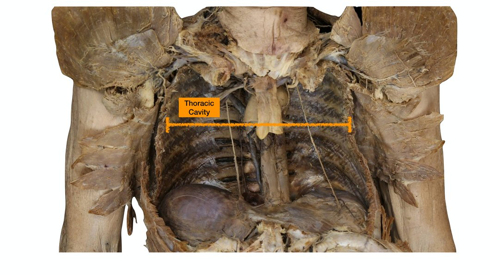
Part 2
The Upper Respiratory Tract
Nose, nasal cavity, sinuses, and pharynx: warming, filtering, and routing air.
Part 2 · Nose
The external nose and nasal cavity
- Beyond conducting air, the nose warms, moistens, and filters it, serves as a resonating chamber for speech, and houses the olfactory receptors.
- External nose features: the root, the bridge, the dorsum (anterior margin), the apex (tip), the nostrils (external nares), and the alae (the flared sides of the nostrils).
- Skeletal framework: nasal and frontal bones superiorly; the maxillae laterally; flexible hyaline cartilages (septal, alar, and lateral) inferiorly.
- Nasal septum divides the cavity: septal cartilage anteriorly; the vomer and the perpendicular plate of the ethmoid posteriorly. The cavity opens posteriorly into the pharynx through the choanae.
- Roof: ethmoid and sphenoid bones. Floor: the palate (hard palate in front, soft palate behind) separating it from the mouth. Vestibule: the area just inside the nostril, lined with skin and hairs (vibrissae) that filter particles.
Part 2 · Mucosa & conchae
Mucosa, conchae, and conditioning the air
- Olfactory mucosa sits high in the cavity and houses the smell receptors. Respiratory mucosa (pseudostratified ciliated columnar epithelium with goblet cells) lines the rest.
- Glands secrete lysozyme (antibacterial enzyme) and defensins (natural antibiotics); the high water content humidifies the air.
- Cilia sweep mucus toward the pharynx to be swallowed. Cold air slows the cilia, so the nose runs in cold weather.
- The three conchae (superior, middle, inferior) increase surface area and add turbulence to warm, moisten, and filter inhaled air, and to reclaim heat and moisture on exhalation. The grooves beneath them are the superior, middle, and inferior meatuses.
- Sensory nerve endings trigger a sneeze when dust or pollen irritates the lining. Capillaries close to the surface warm the air and make nosebleeds (epistaxis) common.
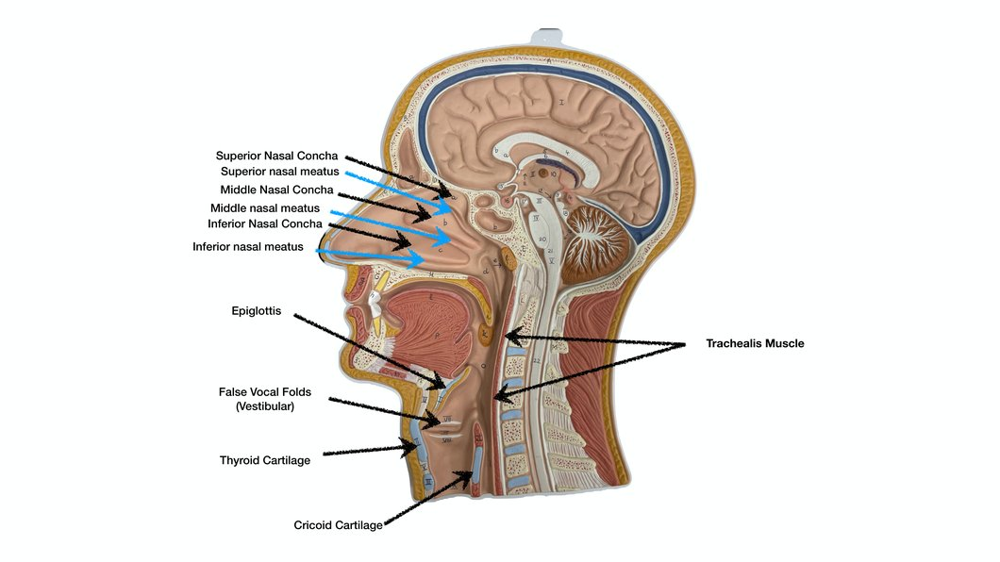
Part 2 · Sinuses & clinical
Paranasal sinuses and clinical correlations
- The paranasal sinuses sit within the frontal, ethmoid, sphenoid, and maxillary bones.
- Functions: they lighten the skull, warm and moisten the air, and produce mucus that drains into the nasal cavity.
- Rhinitis: inflammation of the nasal mucosa, with excess mucus, congestion, and post-nasal drip; linked to allergies, viral or bacterial infection.
- Sinusitis: inflammation of the sinuses, often when drainage is blocked.
Part 2 · Pharynx
The pharynx: three regions
| Region | Location | Carries | Key features |
|---|---|---|---|
| Nasopharynx | behind the nasal cavity, above the soft palate | air only | pseudostratified ciliated epithelium; the pharyngeal tonsil (adenoid) |
| Oropharynx | behind the mouth, down to the epiglottis | air and food | stratified squamous epithelium; palatine and lingual tonsils |
| Laryngopharynx | behind the larynx, to the esophagus | air and food | the shared passage where air and food pathways divide |
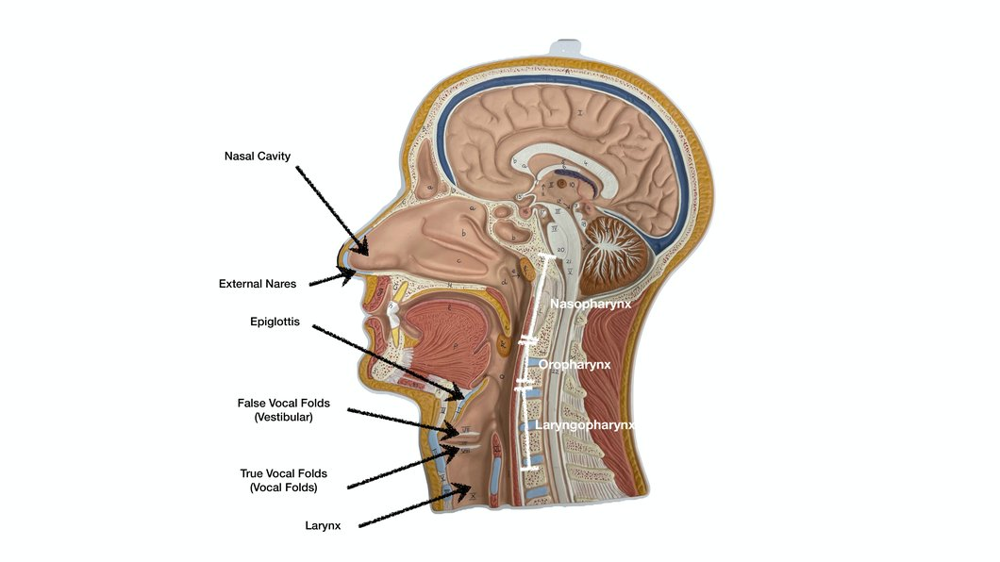
Part 3
The Larynx
Nine cartilages, the vocal folds, and how the airway is guarded.
Part 3 · Larynx
The larynx: framework and the nine cartilages
- The larynx connects the pharynx to the trachea. It runs from about the C3 to C6 vertebrae (roughly two inches). It keeps the airway open, routes air and food correctly, and produces the voice.
- It is built from nine cartilages, mostly hyaline, except the epiglottis, which is elastic cartilage.
- Thyroid cartilage: large shield; its laryngeal prominence is the Adam’s apple. Cricoid cartilage: ring-shaped, just below, anchored to the trachea.
- Paired arytenoid, cuneiform, and corniculate cartilages form the posterior wall; the arytenoids anchor the vocal folds.
- The epiglottis folds down over the laryngeal inlet during a swallow, keeping food out of the lower airway.
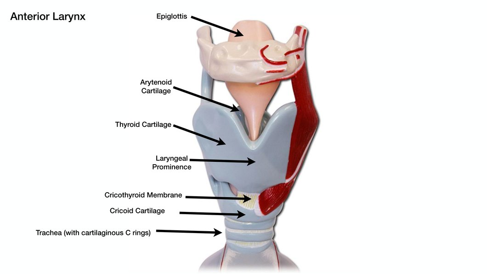
Part 3 · Vocal folds
Vocal folds, the glottis, and voice
- True vocal folds (vocal cords) contain the vocal ligaments running from the arytenoid cartilages to the thyroid cartilage. They are pearly white and avascular and vibrate to make sound.
- The glottis is the opening between the vocal folds.
- Vestibular folds (false vocal cords) sit above the true folds, close the airway during swallowing, and have no role in sound.
- Epithelium: stratified squamous above the cords (protects against friction) and pseudostratified ciliated columnar below (moves mucus upward).
- The sound is amplified (resonance) by the pharynx, oral and nasal cavities, and sinuses; the tongue, soft palate, and lips shape it into speech. As a sphincter, the closed folds enable the Valsalva maneuver, raising intra-abdominal pressure for lifting or emptying the bowel.
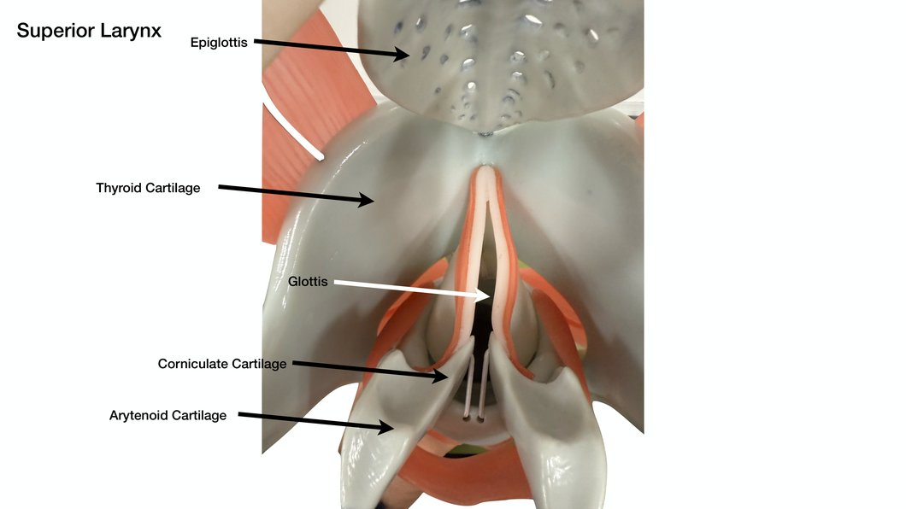
Part 4
Trachea and Bronchial Tree
The windpipe, its histology, and the branching airways.
Part 4 · Trachea
The trachea: layers, C-rings, and the carina
- The trachea (windpipe) descends from the larynx into the mediastinum, about 10 to 12 cm long and 2 cm wide.
- Four layers: mucosa (pseudostratified ciliated columnar with goblet cells), submucosa (mucous glands), a layer of 16 to 20 C-shaped hyaline cartilage rings, and the outer adventitia.
- The open part of each C faces posteriorly and is bridged by the trachealis muscle; the rings keep the airway from collapsing.
- The last cartilage forms the carina, the internal ridge where the trachea splits into the two main bronchi; it is highly sensitive and triggers the cough reflex.
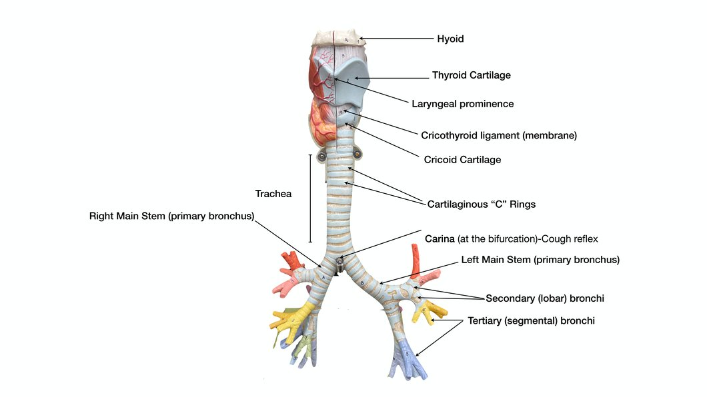
Part 4 · Histology
Tracheal histology
- The lining is respiratory epithelium: pseudostratified ciliated columnar epithelium with goblet cells.
- Goblet cells make the mucus sheet that traps debris; the cilia sweep it upward toward the pharynx (the mucociliary escalator).
- The C-rings are hyaline cartilage; elastic fibers in the wall allow stretch and recoil during breathing.
- The trachealis (smooth muscle) contracts to narrow the trachea and speed air out during a cough.
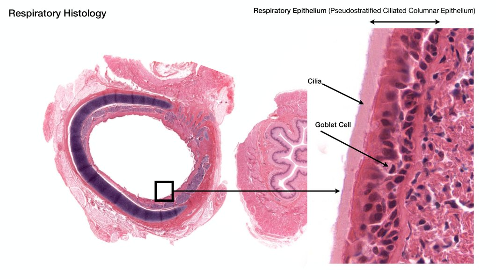
Part 4 · Bronchial tree
The bronchial tree and tissue changes
- The trachea divides at the sternal angle (about T4 to T5) into the right and left main (primary) bronchi. The right main bronchus is wider, shorter, and more vertical, so inhaled objects usually land in the right lung.
- Each main bronchus branches into lobar (secondary) bronchi (one per lobe), then segmental (tertiary) bronchi (one per bronchopulmonary segment), then bronchioles (under 1 mm).
- As the tubes shrink: cartilage rings give way to irregular plates, then disappear in bronchioles; the epithelium thins from pseudostratified columnar toward simple cuboidal in terminal bronchioles; and smooth muscle increases.
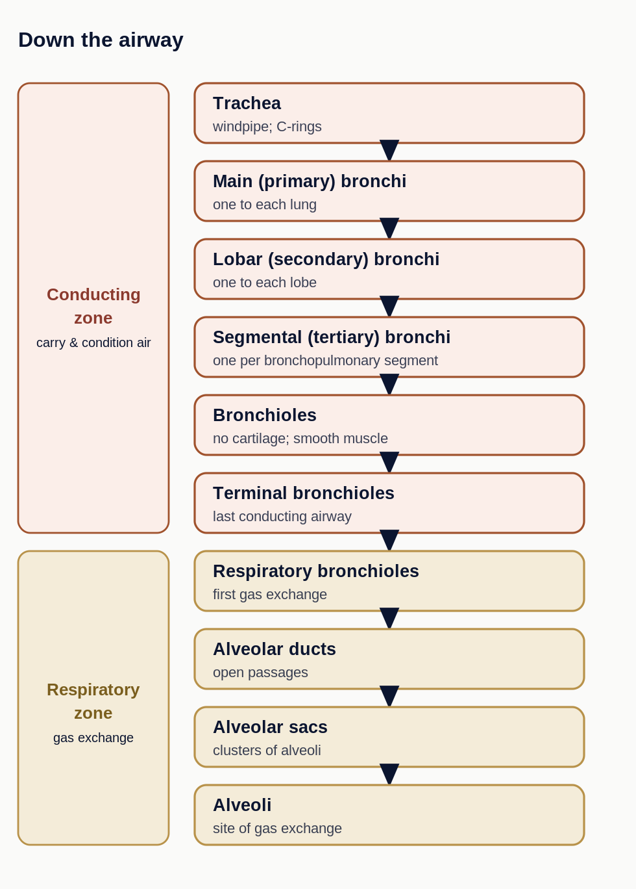
Part 5
Respiratory Zone and the Lungs
Where air meets blood, and the gross anatomy of the lungs.
Part 5 · Respiratory zone
The alveolus and the respiratory membrane
- The respiratory zone begins where terminal bronchioles feed respiratory bronchioles, then alveolar ducts and alveoli. Gas exchange happens at the individual alveolus, not the sac.
- The respiratory membrane (blood-air barrier) is the alveolar wall plus the capillary wall. Type I alveolar cells are the thin squamous wall; gases cross by simple diffusion.
- Type II alveolar cells secrete surfactant, which lowers surface tension and keeps alveoli from collapsing, plus antimicrobial proteins.
- Alveolar macrophages (dust cells) clear debris; alveolar pores equalize pressure between alveoli.
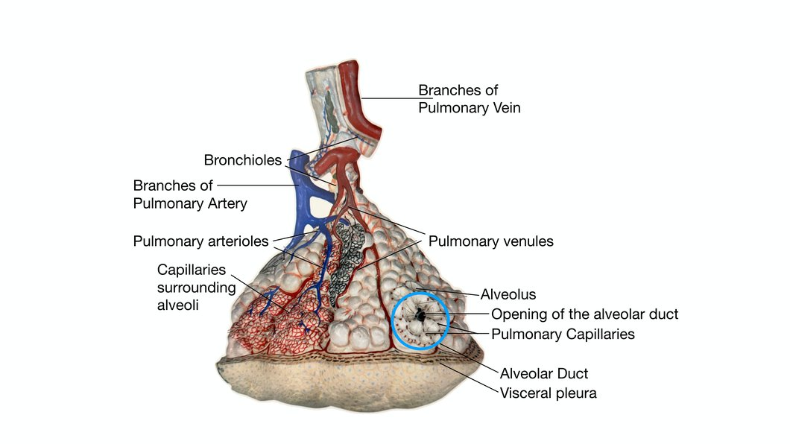
Part 5 · Histology
Cells of the airway and alveolus
| Cell | Where | Role |
|---|---|---|
| Ciliated cell | pseudostratified columnar lining of the conducting airways | cilia sweep the mucus escalator toward the pharynx |
| Goblet cell | conducting airway epithelium | secretes the mucus that traps dust and microbes |
| Basal cell | base of the epithelium | stem cell that replaces worn-out epithelial cells |
| Type I alveolar cell | alveolar wall (simple squamous) | forms the thin wall where gases diffuse |
| Type II alveolar cell | alveolar wall (cuboidal, septal cell) | secretes surfactant and antimicrobial proteins |
| Alveolar macrophage (dust cell) | free on the alveolar surface | engulfs inhaled debris and microbes |
Part 5 · Lungs
The lungs: lobes and fissures
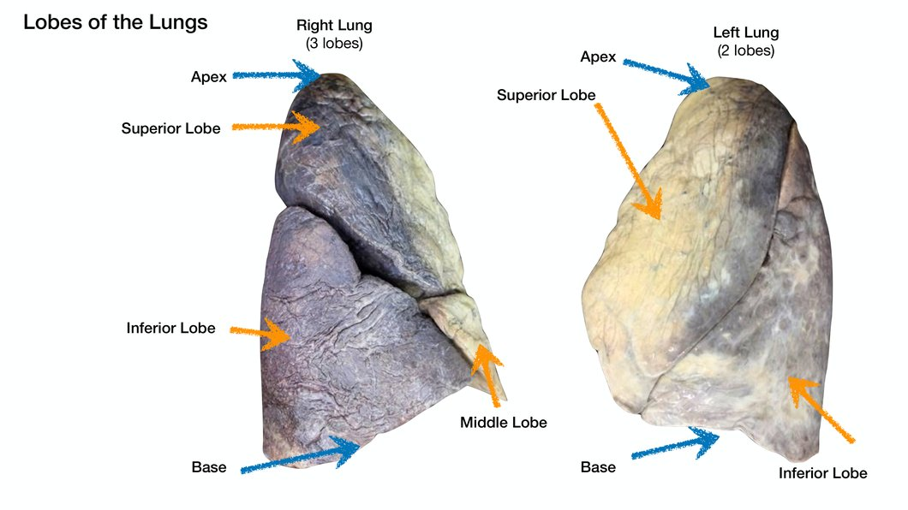
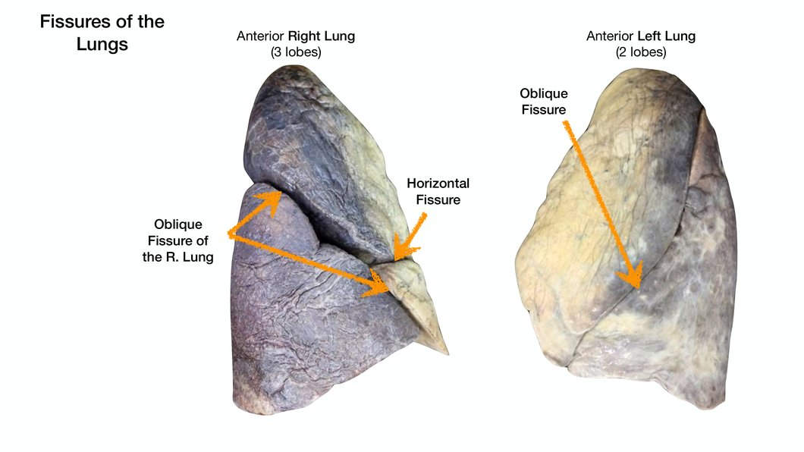
Part 5 · Hilum & pleurae
Hilum, surfaces, and pleurae
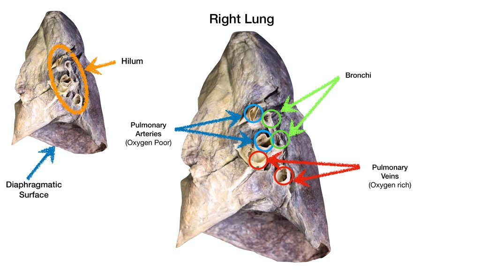
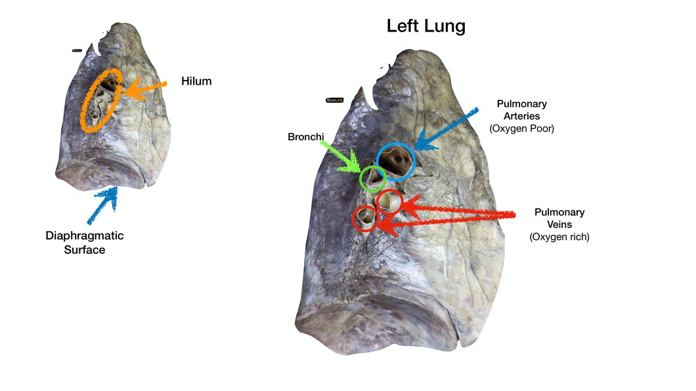
Part 5 · Segments & supply
Bronchopulmonary segments, blood supply, and innervation
- Bronchopulmonary segments are the functional units, each with its own tertiary bronchus, artery, and vein. The right lung has 10; the left has about 8 to 10.
- Because a segment is self-contained, a diseased segment can be surgically removed without harming its neighbors.
- Two circulations: pulmonary circulation (low pressure, high volume) brings blood for gas exchange; bronchial circulation (high pressure, low volume) feeds the lung tissue itself.
- Innervation: parasympathetic, sympathetic, and visceral sensory nerves of the pulmonary plexus set airway and vessel tone.
Part 5 · Diaphragm
The diaphragm and its three openings
- The diaphragm is the dome-shaped muscle of breathing; it separates the thoracic cavity from the abdominal cavity and is supplied by the phrenic nerve. Quiet breathing is driven by the diaphragm; accessory muscles (external intercostals, scalenes, sternocleidomastoid) add thoracic volume changes during forced breathing.
- Three structures pass through it, an easy memory as I-8, E-10, A-12:
- Inferior vena cava at T8.
- Esophagus at T10.
- Abdominal aorta at T12.
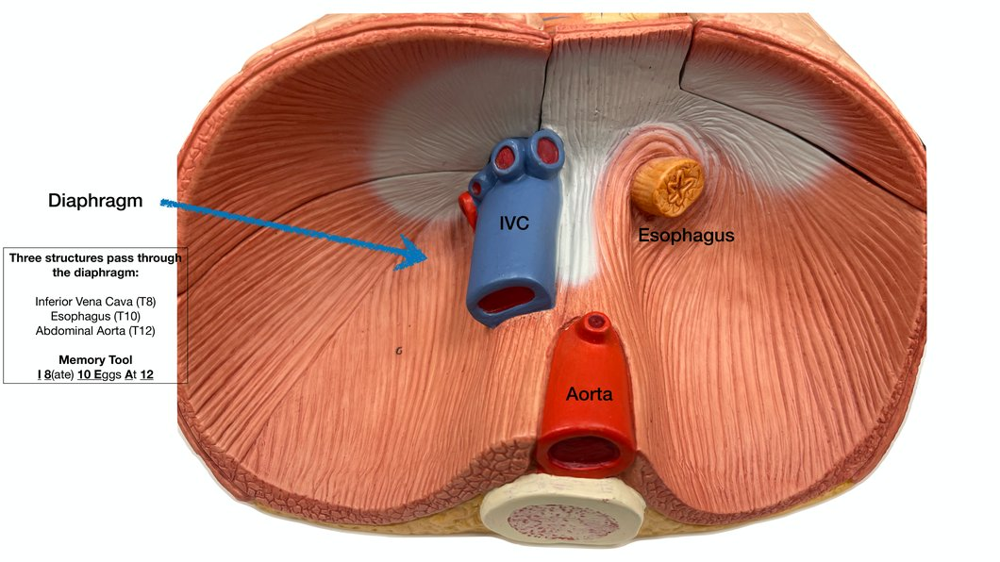
Part 6
Clicker Questions
Five reasoning questions. Each has 60 seconds on the clock. Answers and justifications follow.
Part 6 · Clicker (DOK 3)
Question 1
A CT scan shows aspiration pneumonia from an inhaled object. Predict the more likely lung and justify it.
- Left lung, because its cardiac notch leaves more room.
- Right lung, because the right main bronchus is wider, shorter, and more vertical.
- Either lung equally, because the main bronchi are symmetric.
- Left lung, because the left main bronchus is more vertical.
Part 6 · Clicker (DOK 3)
Question 2
A premature infant cannot make surfactant yet. Predict the effect on the alveoli and on breathing.
- Alveoli overinflate and gas exchange speeds up.
- Airways constrict but the alveoli are unaffected.
- Nothing changes until a normal birth weight is reached.
- Alveoli collapse and each breath takes far more effort.
Part 6 · Clicker (DOK 3)
Question 3
A clinician needs to drain pleural fluid from a patient. Predict where the needle goes and why.
- The costodiaphragmatic recess, the lowest point of the pleural cavity, where fluid pools.
- The hilum, where the vessels and bronchi enter.
- The apex, just above the clavicle.
- The carina, at the fork of the trachea.
Part 6 · Clicker (DOK 3)
Question 4
Emphysema destroys alveolar walls. Predict the effect on gas exchange and why.
- It improves, because the alveoli become larger.
- It is unchanged, because surface area does not matter.
- It falls, because destroyed walls shrink the surface area for diffusion.
- It improves, because less surfactant is needed.
Part 6 · Clicker (DOK 3)
Question 5
During a swallow, predict what protects the lower airway and how it works.
- The C-rings of the trachea seal the windpipe shut.
- The epiglottis folds over the laryngeal inlet and the vocal and vestibular folds close.
- The carina closes off the main bronchi.
- The diaphragm contracts to block the airway.
Part 7
Clicker Answer Key
The correct choice for each question, why it is right, and why each other option is wrong.
Answer key
Question 1: answer
A CT scan shows aspiration pneumonia from an inhaled object. Predict the more likely lung and justify it.
Correct answer: B. Right lung, because the right main bronchus is wider, shorter, and more vertical.
The geometry of the right main bronchus channels aspirated material straight down into the right lung.
- A: the cardiac notch shapes the lung but does not steer aspirated objects.
- C: the two main bronchi are not symmetric; the right is more vertical.
- D: the LEFT main bronchus is more horizontal, not more vertical.
Answer key
Question 2: answer
A premature infant cannot make surfactant yet. Predict the effect on the alveoli and on breathing.
Correct answer: D. Alveoli collapse and each breath takes far more effort.
Surfactant lowers surface tension. Without it, surface tension pulls the alveoli closed (atelectasis), and reopening them with every breath is exhausting (infant respiratory distress syndrome).
- A: missing surfactant raises surface tension, collapsing alveoli, not inflating them.
- B: the core problem is alveolar collapse, not bronchoconstriction.
- C: the deficiency causes immediate respiratory distress at birth.
Answer key
Question 3: answer
A clinician needs to drain pleural fluid from a patient. Predict where the needle goes and why.
Correct answer: A. The costodiaphragmatic recess, the lowest point of the pleural cavity.
Gravity pools pleural fluid in the costodiaphragmatic recess, making it the safe low target for a thoracentesis needle.
- B: the hilum holds vessels and bronchi, not pooled pleural fluid.
- C: the apex is the highest point; fluid sinks away from it.
- D: the carina is inside the airway, not in the pleural cavity.
Answer key
Question 4: answer
Emphysema destroys alveolar walls. Predict the effect on gas exchange and why.
Correct answer: C. It falls, because destroyed walls shrink the surface area for diffusion.
Gas exchange depends on alveolar surface area. Destroying walls merges many small alveoli into a few large ones, cutting the total surface available for diffusion.
- A: bigger but fewer sacs mean LESS total surface area, not more.
- B: surface area is the main driver of diffusion rate.
- D: surfactant need is not the limiting factor here; lost surface area is.
Answer key
Question 5: answer
During a swallow, predict what protects the lower airway and how it works.
Correct answer: B. The epiglottis folds over the laryngeal inlet and the vocal and vestibular folds close.
During a swallow the epiglottis tips down over the laryngeal inlet and the folds close, routing food into the esophagus and keeping it out of the larynx and trachea.
- A: the C-rings hold the airway open; they cannot seal it shut.
- C: the carina sits far below and does not move to protect the airway.
- D: the diaphragm drives breathing; it does not guard the airway during a swallow.
Wrap-up
Key takeaways
- Four jobs: ventilation, external respiration, gas transport, internal respiration; cellular respiration belongs to the mitochondria.
- Divide the airway two ways: upper/lower tract and conducting/respiratory zone.
- Air path: nose -> pharynx -> larynx -> trachea -> bronchi -> bronchioles -> alveoli.
- The larynx has nine cartilages (epiglottis is elastic); the trachea has C-shaped hyaline rings and a carina.
- Gas exchange crosses the respiratory membrane at the alveolus; type II cells make surfactant.
- Right lung 3 lobes, left 2 lobes with a cardiac notch; the sealed pleural cavity keeps the lung expanded.
- Diaphragm openings: IVC T8, esophagus T10, aorta T12.
Keep studying